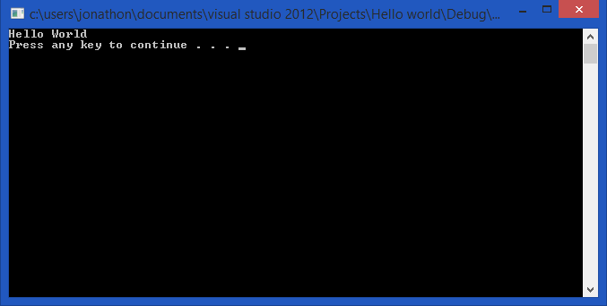

Your First Program
In this tutorial I will be teaching you the first basic tutorial taught to most people learning c++ at the start, Outputting text onto the screen.
Step 1
Firstly you will need to Import the libraries required for the commands to be used in the program. To achieve this you will need to enter
#include < iostream >
What are libraries?
Libraries are groups of code kept outside of software which can be imported to be used as instructions within a program. To do this you will be using the iostream library which will have the common c++ commands within it.
Step 2
Secondly you should type using namespace std; This instruction replaces the start of every instruction
using the standard libraries with the std:: namespace
What is a namespace?
A namespace is an item which goes before an instruction in a library to make it unique.
Why would that need to happen?
This needs to happen as 2 libraries could have the same instruction name therefore causing the software to crash.
Step 3
Next you will need to make a loop which will contain the contents of the software.
To do this type in int main(){}
everything contained within the {} is within the main function, the main function is the function which is run when the software begins
What is a function?
A function is a group of instructions which can be called to run at any time in the code.
Step 4
Within the int main {} Type cout<<"Hello World";
This instruction tells the program to output hello world in to the console (The black window which appears when running the program.)
Step 5
Then type in system("pause");
This tells the computer to wait for the user of the software to wait until the user inputs something.
The Program
Congratulations you have just written your first c++ program this is what it should look like.
Your code should look like so...
#include < iostream >
using namespace std;
int main()
{
//Outputs Hello World to the screen.
cout << "Hello World";
//Pauses the screen and waits to continue.
system("pause");
}
And when it is run it should look like this...
